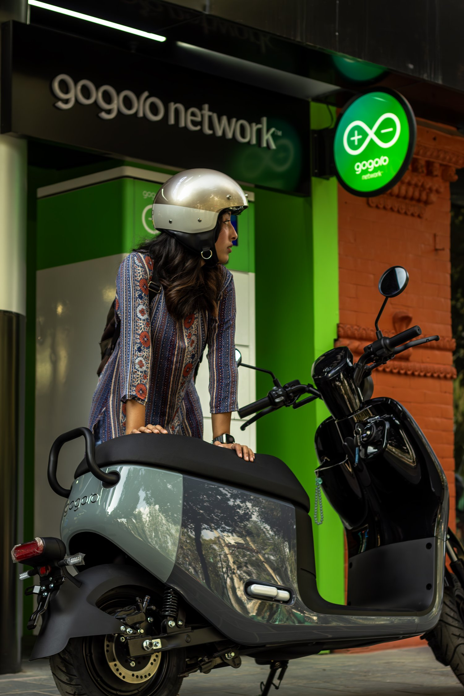
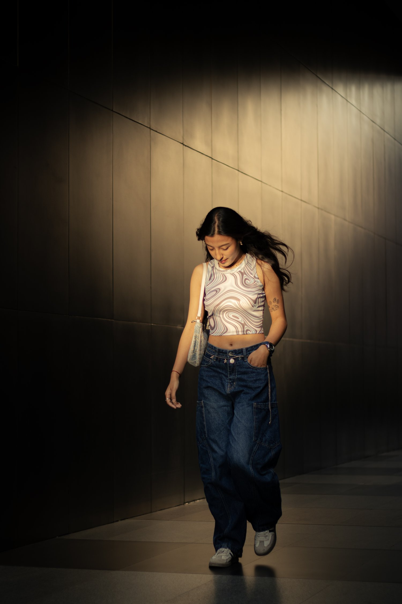
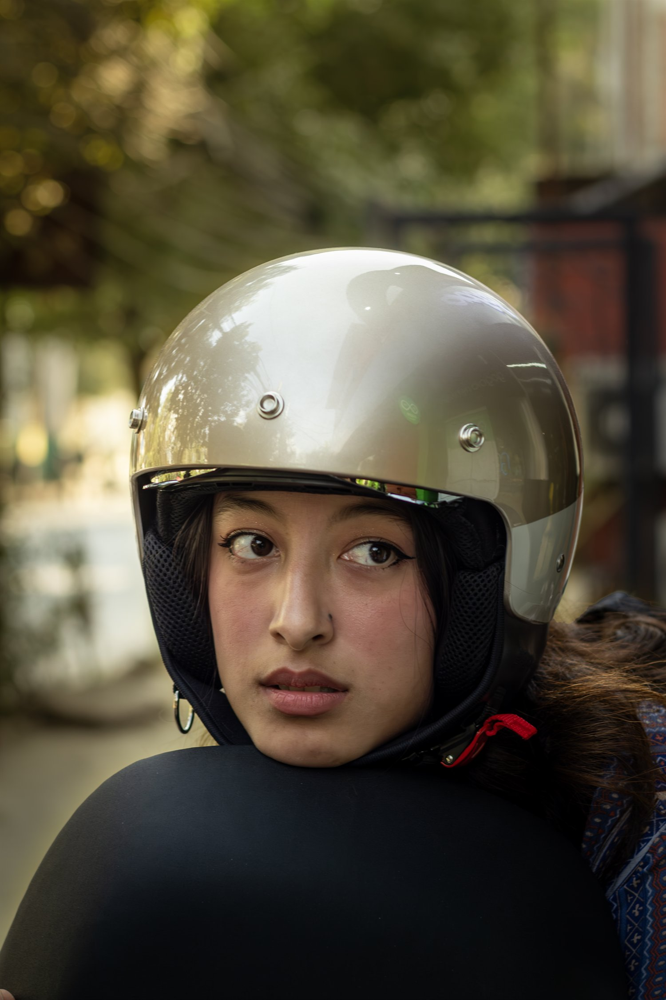
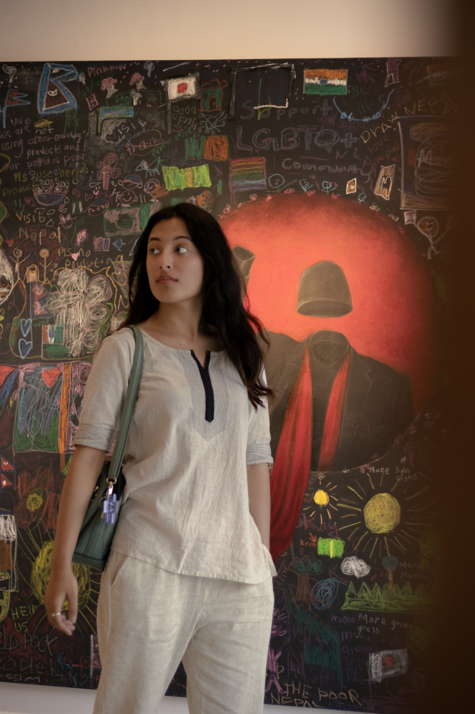
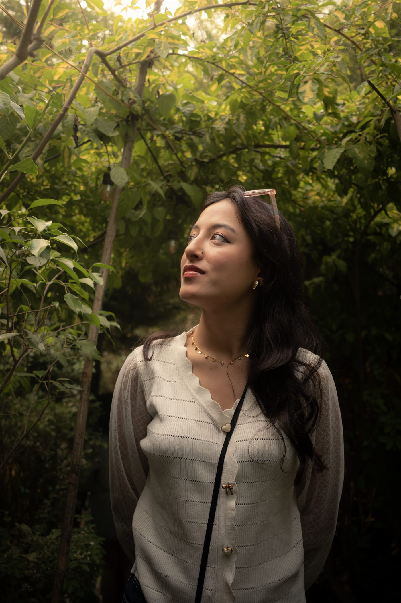
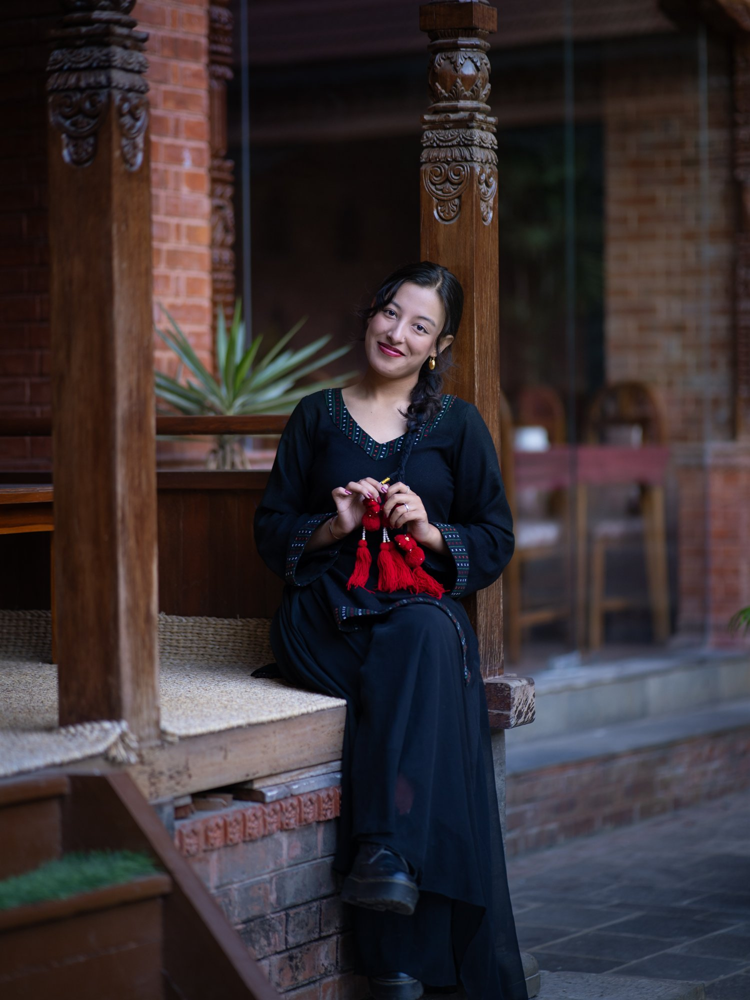
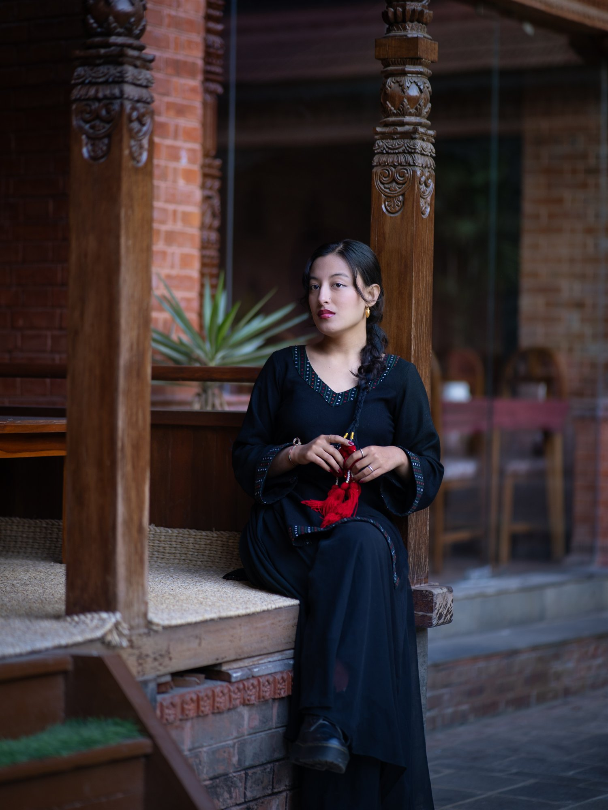
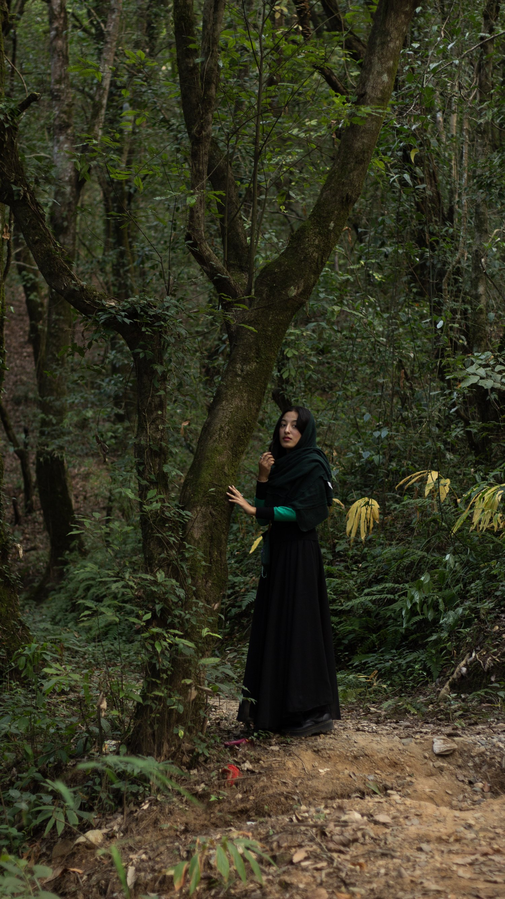

Street Campaign
Electric Motion
A city-led campaign set with sharp styling, scooter movement, and a confident lifestyle edge.
Portfolio 2026
A personal modeling portfolio shaped around expressive portraits, editorial presence, and confident visual storytelling.

About Me
I bring emotion, movement, and quiet confidence to each frame, working with photographers, stylists, and creative teams to shape imagery that feels polished and personal.
My portfolio spans portrait, lifestyle, fashion, and campaign-led visuals, with a focus on expressive posing, clean styling, and mood-driven storytelling.
Selected Shoots

Street Campaign
A city-led campaign set with sharp styling, scooter movement, and a confident lifestyle edge.

Beauty
A detail-focused portrait with expressive eyes, clean framing, and a polished editorial finish.

Creative Portrait
A playful indoor portrait pairing soft styling with a graphic backdrop and curious, candid expression.

Lifestyle
A bright, personal portrait story with relaxed movement, approachable styling, and natural warmth.

Heritage Portrait
A warm portrait with traditional textures, calm styling, and an approachable, expressive mood.

Campaign Portrait
A composed visual moment built around elegant posture, traditional architecture, and quiet confidence.

Outdoor Editorial
A mood-led outdoor frame pairing natural scenery with dramatic styling and stillness.
Natural Portrait
A close, gentle portrait with soft greenery, expressive gaze, and easy natural presence.
Urban Editorial
A dramatic city portrait shaped by golden light, movement, and clean editorial framing.
Shoot Film
Motion brings the portfolio into a more cinematic space, showing posture, movement, and camera presence beyond still frames.
Use this space for behind-the-scenes clips, campaign reels, or any short video that helps casting teams understand your energy on set.
Contact
For shoots, campaigns, collaborations, and creative inquiries, reach out directly by phone, email, or Instagram.